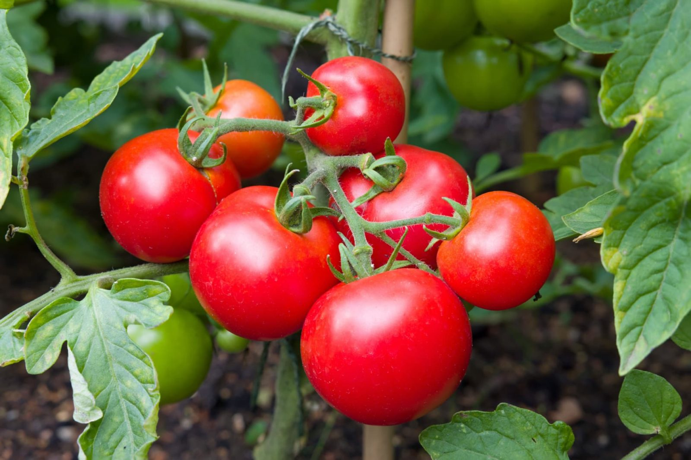

Spring 2025
2025-03-01
Planting plan:

Tomato Money Maker
Solanum lycopersicum
| J | F | M | A | M | J | J | A | S | O | N | D |
Money maker is a popular variety of tomato for commercial growers, home growers, and even as root-stock for grafting other tomato plants. We have experimented with Gigantomo and San Marsano in previous years and struggled, but they were not grown under glass and had moderately poor support. This year we’re trying…